Fernkampf-Infanterie
50 Einheiten · Untergruppen: Bogen, Armbrust & Wurf, Musketen, Gewehre & MG, Schwere Waffen, Energiewaffen, Feldherren. Jede Karte zeigt das Aussehen im Spiel, die Kosten, Stärken und Schwächen, alle Werte und einen Tipp. Das Symbol neben dem Namen ist die Klasse – ihr Name erscheint beim Darüberfahren.
Inhalt – alle Einheiten dieser Seite
Urzeit (1)

Speerschleuderer Urzeit · um 30.000 v. Chr.
Bataillon: 60 Mann · 240 Punkte/Goldje Einheit: 4Frühe moderne Menschen (ab ca. 40 000 v. Chr.) mit der Speerschleuder (Atlatl), die Speere weit und hart fliegen lässt.
Wirft schwere Speere auf mittlere Distanz. Im Nahkampf schwach.
- Fernkampf bis 42 m (42 Schaden je Treffer)
- Rüstungsbrechung 6 %: so viel der gegnerischen Rüstung zählt nicht
- Schnell (4,4 m/s)
- Schwach im Nahkampf – vor Reitern und Stoßtruppen schützen
- Kaum Rüstung: Pfeile und Kugeln treffen voll
- Wenig Munition (10 Schuss) – Lager oder Träger in der Nähe halten
- Wacklige Moral – flieht schnell, wenn es schlecht läuft
- Reiterei, Plänkler und Artillerie – im Nahkampf ist die Truppe schwach
Antike (12)
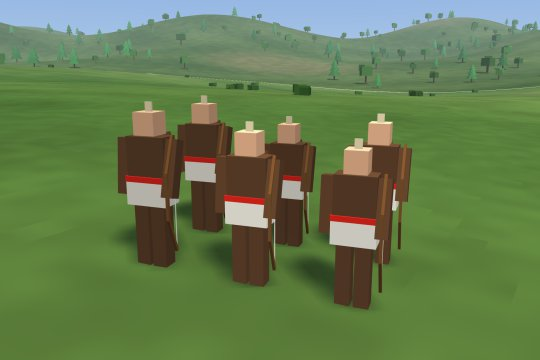
 Medjay-Bogenschütze Antike · 1500 v. Chr.
Medjay-Bogenschütze Antike · 1500 v. Chr.
Bataillon: 60 Mann · 390 Punkte/Goldje Einheit: 6,5
Nubische Elitekrieger, die als Bogenschützen und Wächter im Dienst der Pharaonen standen.
Treffsicher und weitreichend. Im Nahkampf verwundbar.
- Fernkampf bis 170 m (28 Schaden je Treffer)
- Rüstungsbrechung 14 %: so viel der gegnerischen Rüstung zählt nicht
- Schwach im Nahkampf – vor Reitern und Stoßtruppen schützen
- Kaum Rüstung: Pfeile und Kugeln treffen voll
- Reiterei, Plänkler und Artillerie – im Nahkampf ist die Truppe schwach
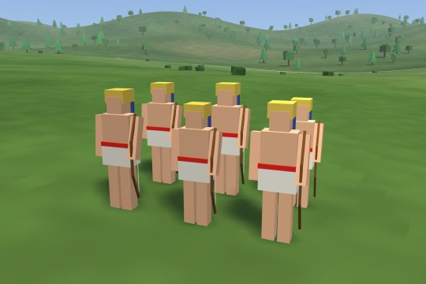
Ägyptischer Bogenschütze Antike · 1274 v. Chr.
Bataillon: 80 Mann · 400 Punkte/Goldje Einheit: 5
Die Bogenschützen des Pharao mit dem starken Kompositbogen – sie entschieden die Schlacht von Kadesch mit.
Weitreichender Pfeilregen, aber kaum Rüstung. Hinter die eigene Linie stellen.
- Fernkampf bis 176 m (26 Schaden je Treffer)
- Rüstungsbrechung 12 %: so viel der gegnerischen Rüstung zählt nicht
- Schwach im Nahkampf – vor Reitern und Stoßtruppen schützen
- Kaum Rüstung: Pfeile und Kugeln treffen voll
- Wacklige Moral – flieht schnell, wenn es schlecht läuft
- Reiterei, Plänkler und Artillerie – im Nahkampf ist die Truppe schwach
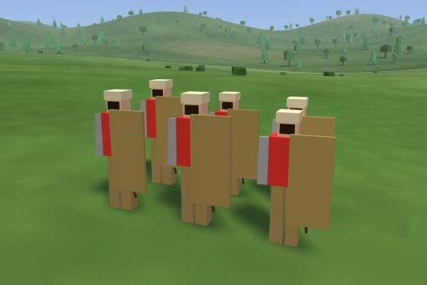
Persischer Bogenschütze Antike · 490 v. Chr.
Bataillon: 80 Mann · 360 Punkte/Goldje Einheit: 4,5
Die Sparabara: Schützen hinter einer Wand aus großen Weidenschilden – das Rückgrat der persischen Heere.
Viele Pfeile auf große Distanz, gut gedeckt gegen Beschuss von vorn. Im Nahkampf schwach.
- Fernkampf bis 165 m (24 Schaden je Treffer)
- Rüstungsbrechung 12 %: so viel der gegnerischen Rüstung zählt nicht
- Schwach im Nahkampf – vor Reitern und Stoßtruppen schützen
- Wacklige Moral – flieht schnell, wenn es schlecht läuft
- Reiterei, Plänkler und Artillerie – im Nahkampf ist die Truppe schwach
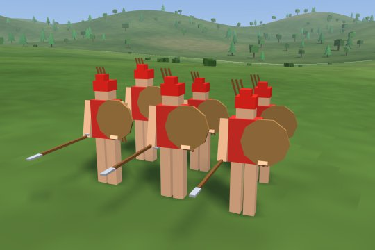
Speerwerfer Antike · 400 v. Chr.
Bataillon: 70 Mann · 315 Punkte/Goldje Einheit: 4,5Thrakischer Peltast mit sichelförmigem Schild und einem Bündel Wurfspeere.
Kurze Reichweite, große Wucht – ideal kurz vor dem Zusammenprall.
- Fernkampf bis 30 m (45 Schaden je Treffer)
- Rüstungsbrechung 30 %: so viel der gegnerischen Rüstung zählt nicht
- Schnell (4,2 m/s)
- Schwach im Nahkampf – vor Reitern und Stoßtruppen schützen
- Wenig Munition (8 Schuss) – Lager oder Träger in der Nähe halten
- Reiterei, Plänkler und Artillerie – im Nahkampf ist die Truppe schwach
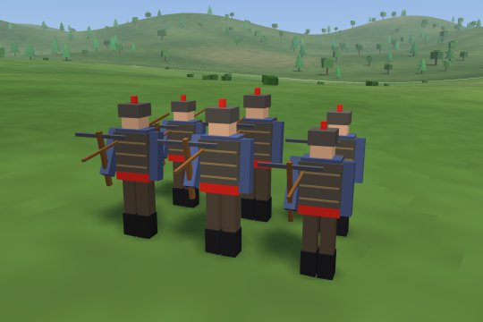
Wei-Wuzu (Elite von Wei) Antike · 400 v. Chr.
Bataillon: 60 Mann · 780 Punkte/Goldje Einheit: 13Die „Wuzu“ des Staates Wei sollen in schwerer Rüstung mit Hellebarde oder Lanze, Schwert, Armbrust mit 50 Bolzen und Proviant für drei Tage an einem Tag 40–50 km marschiert sein.
Armbrustschützen, die auch im Nahkampf bestehen: erst Salven, dann Hellebarde.
- Fernkampf bis 165 m (52 Schaden je Treffer)
- Durchschlag 1 von 6 im Fernkampf, 0 von 6 im Nahkampf
- Rüstungsbrechung 45 %: so viel der gegnerischen Rüstung zählt nicht
- Schwer gerüstet (50 % Rüstung)
- Eiserne Moral – flieht spät und sammelt sich schnell
- keine auffällige Schwäche
- Reiterei in die Flanke, Plänkler und Artillerie auf Distanz

Agrianer Antike · 335 v. Chr.
Bataillon: 60 Mann · 420 Punkte/Goldje Einheit: 7Leichte Speerwerfer aus Thrakien, Alexanders bevorzugte Plänkler: schnell im Gelände und an den Flanken.
Elite-Plänkler mit Wurfspeeren: schnell, treffsicher, weichen dem Nahkampf aus.
- Lauerer: in Wald und Gebüsch nur kurz beim Schießen sichtbar, danach wieder verborgen
- Fernkampf bis 42 m (46 Schaden je Treffer)
- Rüstungsbrechung 30 %: so viel der gegnerischen Rüstung zählt nicht
- Schnell (5,2 m/s)
- Plänkler: weicht dem Nahkampf aus und schießt weiter
- Schwach im Nahkampf – vor Reitern und Stoßtruppen schützen
- Wenig Munition (10 Schuss) – Lager oder Träger in der Nähe halten
- Reiterei, Plänkler und Artillerie – im Nahkampf ist die Truppe schwach
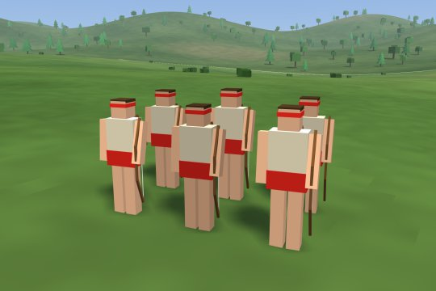
Kretischer Bogenschütze Antike · 300 v. Chr.
Bataillon: 60 Mann · 360 Punkte/Goldje Einheit: 6
Kreta stellte die begehrtesten Bogenschützen der Antike – Söldner für Griechen, Makedonen und Römer.
Präziser und weitreichender als andere antike Schützen. Im Nahkampf verloren.
- Fernkampf bis 160 m (30 Schaden je Treffer)
- Rüstungsbrechung 12 %: so viel der gegnerischen Rüstung zählt nicht
- Schwach im Nahkampf – vor Reitern und Stoßtruppen schützen
- Reiterei, Plänkler und Artillerie – im Nahkampf ist die Truppe schwach

Chu-Armbrustschützen Antike · 300 v. Chr.
Bataillon: 60 Mann · 600 Punkte/Goldje Einheit: 10Die Elite des südlichen Staates Chu: schwer gepanzerte Armbrustschützen, berühmt für ihre Ausdauer auf langen Märschen.
Gepanzerte Armbrustschützen: weite, harte Salven, halten Beschuss gut aus.
- Fernkampf bis 175 m (50 Schaden je Treffer)
- Durchschlag 1 von 6 im Fernkampf, 0 von 6 im Nahkampf
- Rüstungsbrechung 45 %: so viel der gegnerischen Rüstung zählt nicht
- Schwer gerüstet (50 % Rüstung)
- keine auffällige Schwäche
- Reiterei in die Flanke, Plänkler und Artillerie auf Distanz

Elite des Staates Han Antike · 300 v. Chr.
Bataillon: 60 Mann · 900 Punkte/Goldje Einheit: 15
Die Eliten des Staates Han (Streitende Reiche) trugen starke Rüstung, Schilde, Helme und Gesichtsmasken, kämpften mit Schwert und Hellebarde – und alle trugen Daumenringe: sie waren auch Bogenschützen.
Bogenschützen mit voller Rüstung: schießen auf Distanz und halten im Nahkampf stand.
- Fernkampf bis 150 m (28 Schaden je Treffer)
- Rüstungsbrechung 20 %: so viel der gegnerischen Rüstung zählt nicht
- Schwer gerüstet (55 % Rüstung)
- Sehr zäh: 130 Lebenspunkte
- Eiserne Moral – flieht spät und sammelt sich schnell
- keine auffällige Schwäche
- Reiterei in die Flanke, Plänkler und Artillerie auf Distanz

Schleuderer Antike · 200 v. Chr.
Bataillon: 80 Mann · 280 Punkte/Goldje Einheit: 3,5Balearische Schleuderer dienten als Söldner Karthagos und Roms; Bleigeschosse trafen auf über 100 m.
Billige Plänkler, die den Feind schon vor dem Nahkampf ausdünnen.
- Fernkampf bis 120 m (22 Schaden je Treffer)
- Rüstungsbrechung 15 %: so viel der gegnerischen Rüstung zählt nicht
- Schwach im Nahkampf – vor Reitern und Stoßtruppen schützen
- Kaum Rüstung: Pfeile und Kugeln treffen voll
- Wacklige Moral – flieht schnell, wenn es schlecht läuft
- Reiterei, Plänkler und Artillerie – im Nahkampf ist die Truppe schwach

Han-Elitearmbrustschützen Antike · 100 v. Chr.
Bataillon: 50 Mann · 650 Punkte/Goldje Einheit: 13Han-zeitliche Armbrüste wurden teils mit den Beinen gespannt; Berichte nennen Zuggewichte, die nur besonders starke Männer bewältigten.
Schwerste Armbrüste: große Reichweite, durchschlagen Rüstung. Langsam beim Nachladen.
- Fernkampf bis 220 m (72 Schaden je Treffer)
- Durchschlag 1 von 6 im Fernkampf, 0 von 6 im Nahkampf
- Rüstungsbrechung 50 %: so viel der gegnerischen Rüstung zählt nicht
- Langsam (3,3 m/s)
- Reiterei in die Flanke, Plänkler und Artillerie auf Distanz

Römischer Bogenschütze Antike · 100 n. Chr.
Bataillon: 80 Mann · 480 Punkte/Goldje Einheit: 6
Hilfstruppen aus Syrien und Kreta, die Rom als Sagittarii in seine Legionen eingliederte.
Solider Schütze mit Kettenhemd – hält auch einen kurzen Nahkampf aus.
- Fernkampf bis 160 m (27 Schaden je Treffer)
- Rüstungsbrechung 12 %: so viel der gegnerischen Rüstung zählt nicht
- Schwach im Nahkampf – vor Reitern und Stoßtruppen schützen
- Reiterei, Plänkler und Artillerie – im Nahkampf ist die Truppe schwach
Frühmittelalter (2)
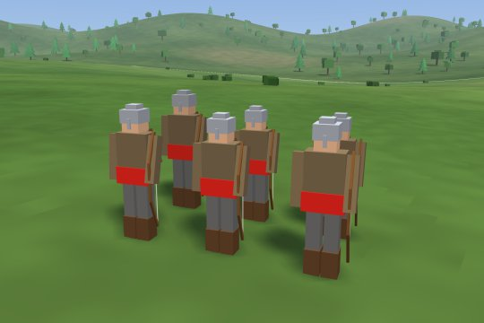
Wikinger-Bogenschütze Frühmittelalter · 900
Bataillon: 60 Mann · 300 Punkte/Goldje Einheit: 5
Auch die Nordmänner kämpften mit Bogen – auf Schiffen, an Küsten und in der Schildreihe.
Kräftiger Schütze, der im Nahkampf mit der Axt nicht hilflos ist.
- Fernkampf bis 165 m (27 Schaden je Treffer)
- Rüstungsbrechung 15 %: so viel der gegnerischen Rüstung zählt nicht
- Schwach im Nahkampf – vor Reitern und Stoßtruppen schützen
- Reiterei, Plänkler und Artillerie – im Nahkampf ist die Truppe schwach

Byzantinischer Bogenschütze Frühmittelalter · 950
Bataillon: 80 Mann · 440 Punkte/Goldje Einheit: 5,5
Die Toxotai des Oströmischen Reiches – nach den Handbüchern ihrer Zeit gedrillte Fernkämpfer.
Präzise und weitreichend. Ideal hinter Skutatoi.
- Fernkampf bis 170 m (28 Schaden je Treffer)
- Rüstungsbrechung 18 %: so viel der gegnerischen Rüstung zählt nicht
- Schwach im Nahkampf – vor Reitern und Stoßtruppen schützen
- Reiterei, Plänkler und Artillerie – im Nahkampf ist die Truppe schwach
Hochmittelalter (7)

Chinesischer Armbrustschütze Hochmittelalter · 1100
Bataillon: 80 Mann · 520 Punkte/Goldje Einheit: 6,5Die Song-Dynastie stellte Zehntausende Armbrustschützen auf, die in Reihen abwechselnd schossen.
Durchschlagende Bolzen in Salven. Langsam nachladend.
- Fernkampf bis 150 m (55 Schaden je Treffer)
- Durchschlag 1 von 6 im Fernkampf, 0 von 6 im Nahkampf
- Rüstungsbrechung 50 %: so viel der gegnerischen Rüstung zählt nicht
- Schwach im Nahkampf – vor Reitern und Stoßtruppen schützen
- Wenig Munition (18 Schuss) – Lager oder Träger in der Nähe halten
- Langsam (3,3 m/s)
- Reiterei, Plänkler und Artillerie – im Nahkampf ist die Truppe schwach

Sarazenischer Bogenschütze Hochmittelalter · 1180
Bataillon: 80 Mann · 520 Punkte/Goldje Einheit: 6,5
Muslimische Schützen der Kreuzzugszeit mit hervorragenden Kompositbögen.
Sehr weitreichend und schnell feuernd. Leicht gerüstet.
- Fernkampf bis 180 m (26 Schaden je Treffer)
- Rüstungsbrechung 22 %: so viel der gegnerischen Rüstung zählt nicht
- Schwach im Nahkampf – vor Reitern und Stoßtruppen schützen
- Reiterei, Plänkler und Artillerie – im Nahkampf ist die Truppe schwach
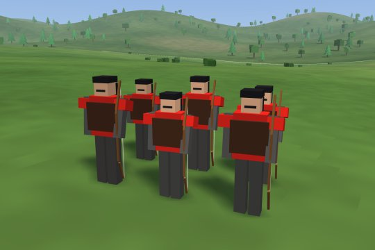
Bogensamurai Hochmittelalter · 1250
Bataillon: 40 Mann · 400 Punkte/Goldje Einheit: 10
Ursprünglich war der Samurai vor allem ein Bogenschütze – der „Weg von Bogen und Pferd“.
Gut gerüsteter Elite-Schütze mit dem langen Yumi-Bogen.
- Fernkampf bis 180 m (30 Schaden je Treffer)
- Rüstungsbrechung 25 %: so viel der gegnerischen Rüstung zählt nicht
- Eiserne Moral – flieht spät und sammelt sich schnell
- keine auffällige Schwäche
- Reiterei in die Flanke, Plänkler und Artillerie auf Distanz

Armbrustschütze Hochmittelalter · 1340
Bataillon: 80 Mann · 600 Punkte/Goldje Einheit: 7,5Genuesische Armbrustschützen waren im Spätmittelalter überall gefragte Söldner.
Langsam nachladend, aber die Bolzen durchschlagen Kettenhemd und Holz.
- Fernkampf bis 160 m (62 Schaden je Treffer)
- Durchschlag 1 von 6 im Fernkampf, 0 von 6 im Nahkampf
- Rüstungsbrechung 52 %: so viel der gegnerischen Rüstung zählt nicht
- Schwach im Nahkampf – vor Reitern und Stoßtruppen schützen
- Wenig Munition (16 Schuss) – Lager oder Träger in der Nähe halten
- Langsam (3,3 m/s)
- Reiterei, Plänkler und Artillerie – im Nahkampf ist die Truppe schwach
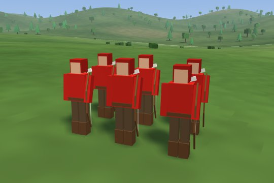
Langbogenschütze Hochmittelalter · 1346
Bataillon: 80 Mann · 480 Punkte/Goldje Einheit: 6
Englische Langbogenschützen entschieden Crécy (1346) und Azincourt (1415) – mit Pfeilen bis 250 m.
Pfeilregen im hohen Bogen über die eigenen Reihen hinweg. Schutzlos im Nahkampf.
- Baut: Pfähle setzen
- Fernkampf bis 242 m (30 Schaden je Treffer)
- Rüstungsbrechung 18 %: so viel der gegnerischen Rüstung zählt nicht
- Schwach im Nahkampf – vor Reitern und Stoßtruppen schützen
- Kaum Rüstung: Pfeile und Kugeln treffen voll
- Wacklige Moral – flieht schnell, wenn es schlecht läuft
- Reiterei, Plänkler und Artillerie – im Nahkampf ist die Truppe schwach
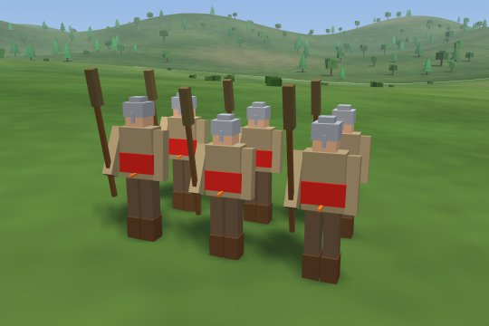
 · Musketen") Handrohrschützen Hochmittelalter · 1380
Handrohrschützen Hochmittelalter · 1380
Bataillon: 60 Mann · 240 Punkte/Goldje Einheit: 4
Die ersten Feuerwaffen Europas (14. Jh.): ein kurzes Rohr aus Bronze oder Eisen auf einer Stange, mit der Lunte gezündet. Laut, langsam und ungenau – aber auf kurze Distanz durchschlug die Kugel Plattenpanzer.
Billig und schnell ausgebildet: hoher Schaden mit hoher Rüstungsbrechung, durchschlägt Ritterrüstungen. Auf Distanz sehr ungenau, sehr langsames Nachladen, schwer und unhandlich.
- Fernkampf bis 85 m (150 Schaden je Treffer)
- Durchschlag 2 von 6 im Fernkampf, 0 von 6 im Nahkampf
- Rüstungsbrechung 60 %: so viel der gegnerischen Rüstung zählt nicht
- Schwach im Nahkampf – vor Reitern und Stoßtruppen schützen
- Wenig Munition (8 Schuss) – Lager oder Träger in der Nähe halten
- Langes Nachladen (26 s)
- Langsam (2,8 m/s)
- Wacklige Moral – flieht schnell, wenn es schlecht läuft
- Reiterei, Plänkler und Artillerie – im Nahkampf ist die Truppe schwach
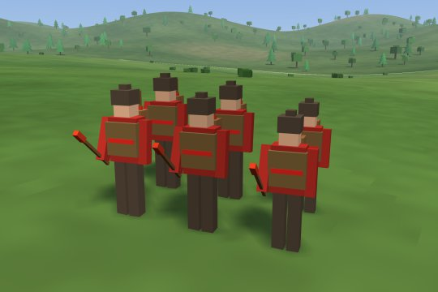
Feuerpfeil-Schütze (China) Hochmittelalter · 1232
Bataillon: 40 Mann · 320 Punkte/Goldje Einheit: 8Die Song-Dynastie verteidigte Kaifeng 1232 mit Feuerpfeilen – den ersten Raketen der Welt, mit Schwarzpulver angetrieben.
Raketenpfeile mit kleiner Sprengwirkung auf große Distanz. Ungenau, erschreckt aber Pferde und Fußvolk.
- Fernkampf bis 120 m (40 Schaden je Treffer)
- Flächenwirkung: trifft alles im Umkreis von etwa 1,3 m
- Rüstungsbrechung 35 %: so viel der gegnerischen Rüstung zählt nicht
- Schwach im Nahkampf – vor Reitern und Stoßtruppen schützen
- Wenig Munition (12 Schuss) – Lager oder Träger in der Nähe halten
- Wacklige Moral – flieht schnell, wenn es schlecht läuft
- Reiterei, Plänkler und Artillerie – im Nahkampf ist die Truppe schwach
Renaissance (3)
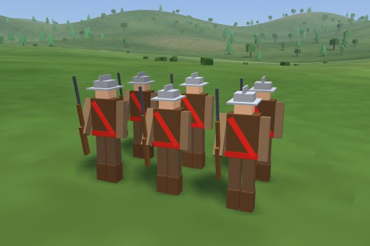
Arkebusier Renaissance · 1525
Bataillon: 80 Mann · 520 Punkte/Goldje Einheit: 6,5
Früher Feuerwaffenträger (um 1500) mit Luntenschloss – die Ablösung von Bogen und Armbrust.
Laut und ungenau, aber durchschlagskräftig gegen Rüstung. Lädt sehr langsam.
- Fernkampf bis 70 m (80 Schaden je Treffer)
- Durchschlag 2 von 6 im Fernkampf, 0 von 6 im Nahkampf
- Rüstungsbrechung 57 %: so viel der gegnerischen Rüstung zählt nicht
- Schwach im Nahkampf – vor Reitern und Stoßtruppen schützen
- Wenig Munition (12 Schuss) – Lager oder Träger in der Nähe halten
- Langes Nachladen (12 s)
- Langsam (3,2 m/s)
- Reiterei, Plänkler und Artillerie – im Nahkampf ist die Truppe schwach
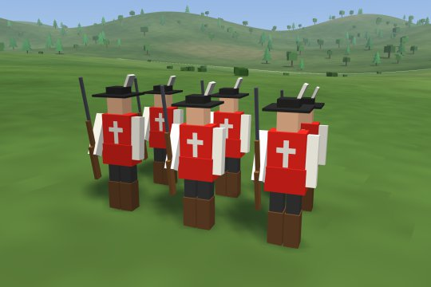
Musketier Renaissance · 1630
Bataillon: 80 Mann · 640 Punkte/Goldje Einheit: 8
Musketier des Dreißigjährigen Krieges (1618–48) mit Dreispitz und Luntenmuskete.
Verheerende Salven auf mittlere Distanz. Braucht Pikeniere als Schutz vor Reitern.
- Fernkampf bis 90 m (85 Schaden je Treffer)
- Durchschlag 2 von 6 im Fernkampf, 0 von 6 im Nahkampf
- Rüstungsbrechung 60 %: so viel der gegnerischen Rüstung zählt nicht
- Schwach im Nahkampf – vor Reitern und Stoßtruppen schützen
- Wenig Munition (14 Schuss) – Lager oder Träger in der Nähe halten
- Langes Nachladen (9 s)
- Langsam (3,3 m/s)
- Reiterei, Plänkler und Artillerie – im Nahkampf ist die Truppe schwach
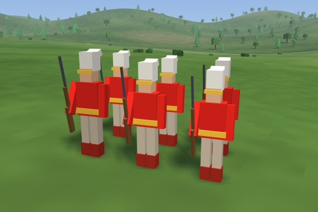
Janitschar Renaissance · 1650
Bataillon: 60 Mann · 870 Punkte/Goldje Einheit: 14,5
Elitetruppe der Osmanen (14.–19. Jh.), erste stehende Infanterie Europas mit Muskete und Yatagan.
Hervorragende Schützen mit guter Moral, auch im Nahkampf brauchbar.
- Fernkampf bis 100 m (90 Schaden je Treffer)
- Durchschlag 2 von 6 im Fernkampf, 0 von 6 im Nahkampf
- Rüstungsbrechung 60 %: so viel der gegnerischen Rüstung zählt nicht
- Kann anstürmen: +60 % Schaden beim Aufprall
- Eiserne Moral – flieht spät und sammelt sich schnell
- Wenig Munition (16 Schuss) – Lager oder Träger in der Nähe halten
- Reiterei in die Flanke, Plänkler und Artillerie auf Distanz
Linienzeit (5)
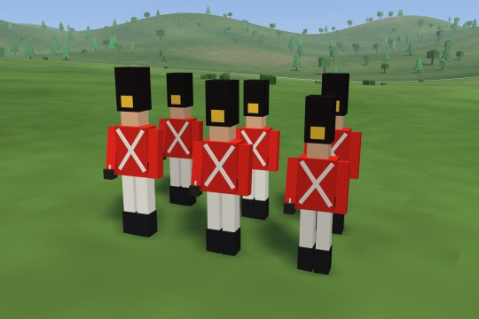
 Grenadier Linienzeit · 1760
Grenadier Linienzeit · 1760
Bataillon: 40 Mann · 600 Punkte/Goldje Einheit: 15
Ursprünglich die größten Männer eines Regiments, ausgesucht, um Handgranaten weit zu werfen.
Granaten reißen Lücken in dichte Formationen und treffen auch hinter Mauern.
- Fernkampf bis 30 m (90 Schaden je Treffer)
- Flächenwirkung: trifft alles im Umkreis von etwa 2,4 m
- Durchschlag 2 von 6 im Fernkampf, 0 von 6 im Nahkampf
- Rüstungsbrechung 70 %: so viel der gegnerischen Rüstung zählt nicht
- Schwach im Nahkampf – vor Reitern und Stoßtruppen schützen
- Mindestreichweite 6 m – direkt davor trifft er nichts
- Wenig Munition (8 Schuss) – Lager oder Träger in der Nähe halten
- Reiterei, Plänkler und Artillerie – im Nahkampf ist die Truppe schwach
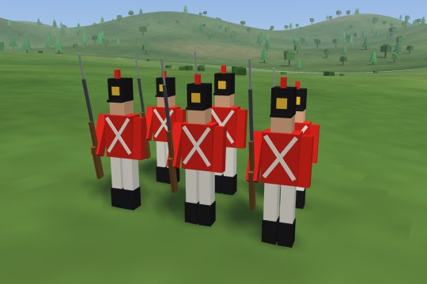
Linieninfanterie Linienzeit · 1800
Bataillon: 80 Mann · 880 Punkte/Goldje Einheit: 11
Infanterie der Napoleonischen Kriege (1792–1815) mit Tschako, Steinschlossmuskete und Bajonett.
Schnellere Salven als frühere Musketiere und ein brauchbares Bajonett.
- Baut: Graben ausheben
- Fernkampf bis 110 m (85 Schaden je Treffer)
- Durchschlag 2 von 6 im Fernkampf, 0 von 6 im Nahkampf
- Rüstungsbrechung 70 %: so viel der gegnerischen Rüstung zählt nicht
- Schwach im Nahkampf – vor Reitern und Stoßtruppen schützen
- Wenig Munition (16 Schuss) – Lager oder Träger in der Nähe halten
- Reiterei, Plänkler und Artillerie – im Nahkampf ist die Truppe schwach
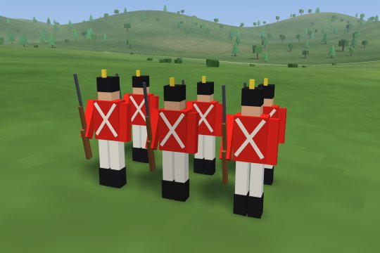
Voltigeur Linienzeit · 1805
Bataillon: 60 Mann · 630 Punkte/Goldje Einheit: 10,5
Leichte französische Infanterie, die in aufgelöster Ordnung vor der Linie plänkelte.
Schießt aus der Deckung, weicht aus und stört die feindliche Linie.
- Lauerer: in Wald und Gebüsch nur kurz beim Schießen sichtbar, danach wieder verborgen
- Baut: Graben ausheben
- Fernkampf bis 120 m (85 Schaden je Treffer)
- Durchschlag 2 von 6 im Fernkampf, 0 von 6 im Nahkampf
- Rüstungsbrechung 70 %: so viel der gegnerischen Rüstung zählt nicht
- Schnell (4,2 m/s)
- Plänkler: weicht dem Nahkampf aus und schießt weiter
- Schwach im Nahkampf – vor Reitern und Stoßtruppen schützen
- Kaum Rüstung: Pfeile und Kugeln treffen voll
- Reiterei, Plänkler und Artillerie – im Nahkampf ist die Truppe schwach

Jäger Linienzeit · 1810
Bataillon: 40 Mann · 560 Punkte/Goldje Einheit: 14
Förster und Jäger mit gezogener Büchse – die ersten Scharfschützen der Neuzeit.
Trifft auf über 200 m, lädt aber quälend langsam. Gut, um Offiziere und Kanoniere auszuschalten.
- Lauerer: in Wald und Gebüsch nur kurz beim Schießen sichtbar, danach wieder verborgen
- Baut: Graben ausheben
- Fernkampf bis 230 m (95 Schaden je Treffer)
- Durchschlag 2 von 6 im Fernkampf, 0 von 6 im Nahkampf
- Rüstungsbrechung 72 %: so viel der gegnerischen Rüstung zählt nicht
- Schwach im Nahkampf – vor Reitern und Stoßtruppen schützen
- Kaum Rüstung: Pfeile und Kugeln treffen voll
- Wenig Munition (20 Schuss) – Lager oder Träger in der Nähe halten
- Langes Nachladen (14,9 s)
- Reiterei, Plänkler und Artillerie – im Nahkampf ist die Truppe schwach

Gardegrenadier Linienzeit · 1810
Bataillon: 60 Mann · 1.200 Punkte/Goldje Einheit: 20
Die Alte Garde Napoleons mit Bärenfellmütze – Veteranen vieler Feldzüge, eingesetzt erst in der Entscheidung.
Elite-Linieninfanterie: präzise Salven, tödlicher Bajonettangriff, eiserne Moral.
- Baut: Graben ausheben
- Fernkampf bis 110 m (90 Schaden je Treffer)
- Durchschlag 2 von 6 im Fernkampf, 0 von 6 im Nahkampf
- Rüstungsbrechung 70 %: so viel der gegnerischen Rüstung zählt nicht
- Eiserne Moral – flieht spät und sammelt sich schnell
- Wenig Munition (20 Schuss) – Lager oder Träger in der Nähe halten
- Reiterei in die Flanke, Plänkler und Artillerie auf Distanz
Weltkriege (7)
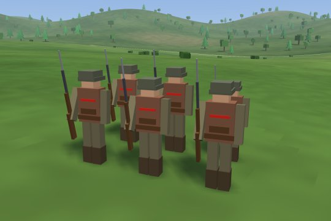
Infanterist (WK) Weltkriege · 1916
Bataillon: 40 Mann · 1.040 Punkte/Goldje Einheit: 26
Soldat der Weltkriege mit Stahlhelm, Repetiergewehr und aufgepflanztem Bajonett.
Weitreichend und zuverlässig, stark aus der Deckung heraus.
- Baut: Graben ausheben
- Fernkampf bis 350 m (50 Schaden je Treffer)
- Durchschlag 2 von 6 im Fernkampf, 0 von 6 im Nahkampf
- Rüstungsbrechung 78 %: so viel der gegnerischen Rüstung zählt nicht
- Schießt auch auf kurze Entfernung mitten im Gefecht
- Schwach im Nahkampf – vor Reitern und Stoßtruppen schützen
- Reiterei, Plänkler und Artillerie – im Nahkampf ist die Truppe schwach
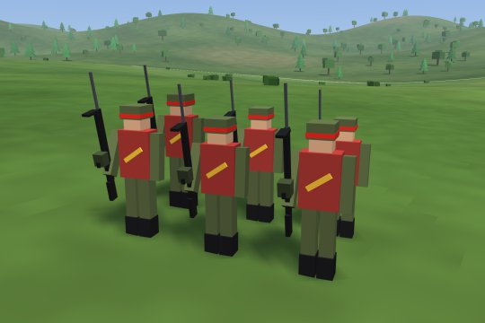
MG-Schütze Weltkriege · 1916
Bataillon: 12 Mann · 870 Punkte/Goldje Einheit: 72,5
Das Maschinengewehr machte im Ersten Weltkrieg jeden Sturmangriff zum Selbstmord.
Ein Hagel aus Blei gegen Massen. Feuert nur im Stand – gut eingegraben fast unbezwingbar.
- Baut: Graben ausheben
- Fernkampf bis 500 m (30 Schaden je Treffer)
- Durchschlag 2 von 6 im Fernkampf, 0 von 6 im Nahkampf
- Rüstungsbrechung 78 %: so viel der gegnerischen Rüstung zählt nicht
- Schwach im Nahkampf – vor Reitern und Stoßtruppen schützen
- Teuer – Verluste schmerzen
- Reiterei, Plänkler und Artillerie – im Nahkampf ist die Truppe schwach
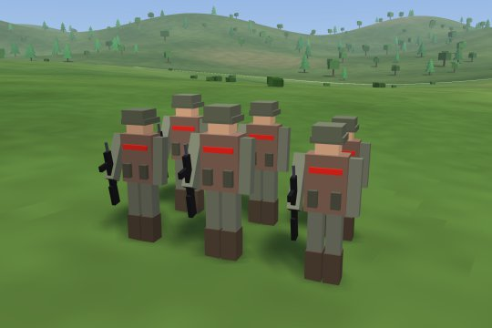
Stoßtruppe Weltkriege · 1918
Bataillon: 30 Mann · 1.290 Punkte/Goldje Einheit: 43
Deutsche Sturmtruppen durchbrachen 1918 die Grabenfronten mit Handgranaten, Maschinenpistolen und Flammenwerfern.
Elite für den Nahbereich: schnelle Feuerstöße bei Häuser- und Grabenkampf.
- Baut: Graben ausheben
- Fernkampf bis 120 m (30 Schaden je Treffer)
- Durchschlag 2 von 6 im Fernkampf, 0 von 6 im Nahkampf
- Rüstungsbrechung 78 %: so viel der gegnerischen Rüstung zählt nicht
- Schnell (4,4 m/s)
- Eiserne Moral – flieht spät und sammelt sich schnell
- Schießt auch auf kurze Entfernung mitten im Gefecht
- keine auffällige Schwäche
- Reiterei in die Flanke, Plänkler und Artillerie auf Distanz

Fallschirmjäger Weltkriege · 1941
Bataillon: 30 Mann · 1.545 Punkte/Goldje Einheit: 51,5
Luftlandetruppe, die hinter den feindlichen Linien abspringt – leicht ausgerüstet, hart ausgebildet.
Schnelle Eliteinfanterie mit hoher Moral. Ideal, um Gebäude und Schlüsselstellen zu nehmen.
- Baut: Graben ausheben
- Fernkampf bis 350 m (40 Schaden je Treffer)
- Durchschlag 2 von 6 im Fernkampf, 0 von 6 im Nahkampf
- Rüstungsbrechung 80 %: so viel der gegnerischen Rüstung zählt nicht
- Schnell (4,6 m/s)
- Eiserne Moral – flieht spät und sammelt sich schnell
- Schießt auch auf kurze Entfernung mitten im Gefecht
- keine auffällige Schwäche
- Reiterei in die Flanke, Plänkler und Artillerie auf Distanz

 · Schwere Waffen") Granatwerfer-Trupp Weltkriege · 1916
Granatwerfer-Trupp Weltkriege · 1916
Bataillon: 12 Mann · 720 Punkte/Goldje Einheit: 60
Leichte Mörser der Infanterie – Steilfeuer über Gräben und Mauern hinweg.
Steilfeuer mit Splitterwirkung auf versteckte Gegner und Besatzungen.
- Fernkampf bis 600 m (120 Schaden je Treffer)
- Flächenwirkung: trifft alles im Umkreis von etwa 3,5 m
- Durchschlag 2 von 6 im Fernkampf, 0 von 6 im Nahkampf
- Rüstungsbrechung 85 %: so viel der gegnerischen Rüstung zählt nicht
- Schwach im Nahkampf – vor Reitern und Stoßtruppen schützen
- Mindestreichweite 40 m – direkt davor trifft er nichts
- Wenig Munition (20 Schuss) – Lager oder Träger in der Nähe halten
- Teuer – Verluste schmerzen
- Reiterei, Plänkler und Artillerie – im Nahkampf ist die Truppe schwach
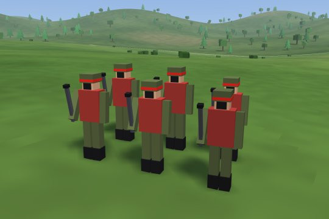
Flammenwerfer Weltkriege · 1917
Bataillon: 10 Mann · 645 Punkte/Goldje Einheit: 64,5
Im Grabenkrieg und Häuserkampf gefürchtet – Brennstoff im Rückentank, Reichweite rund 25 m.
Verbrennt Infanterie auf kurze Distanz, Schilde helfen nicht. Stark gegen Besatzungen in Gebäuden.
- Fernkampf bis 30 m (24 Schaden je Treffer)
- Flächenwirkung: trifft alles im Umkreis von etwa 1,8 m
- Durchschlag 2 von 6 im Fernkampf, 0 von 6 im Nahkampf
- Rüstungsbrechung 70 %: so viel der gegnerischen Rüstung zählt nicht
- Schießt auch auf kurze Entfernung mitten im Gefecht
- Schwach im Nahkampf – vor Reitern und Stoßtruppen schützen
- Teuer – Verluste schmerzen
- Reiterei, Plänkler und Artillerie – im Nahkampf ist die Truppe schwach
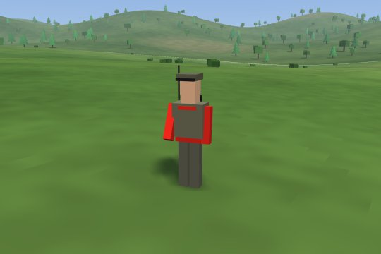
Feldmarschall Weltkriege · 1916
Feldherr · 1.650 Punkte/GoldOberbefehlshaber der Weltkriegsheere – mit Feldtelefon und Stab weit hinter der Front.
Feldherr: konzentriert das Feuer der Artillerie, schickt Reserven und hält die Moral. Bleibt hinter der Linie.
- Feldherr „Stab und Telefon“: Feuerkonzentration und Reserven (Wirkung im Umkreis von 130 m)
- Fernkampf bis 110 m (40 Schaden je Treffer)
- Durchschlag 2 von 6 im Fernkampf, 0 von 6 im Nahkampf
- Rüstungsbrechung 78 %: so viel der gegnerischen Rüstung zählt nicht
- Schwer gerüstet (45 % Rüstung)
- Schnell (4,6 m/s)
- Schießt auch auf kurze Entfernung mitten im Gefecht
- Fällt der Feldherr, verliert das ganze Heer Moral
- Reiterei in die Flanke, Plänkler und Artillerie auf Distanz
Kalter Krieg (1)
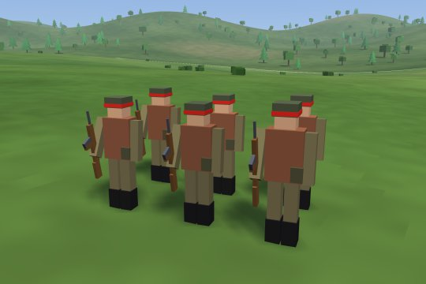
Mot.-Schütze Kalter Krieg · 1975
Bataillon: 50 Mann · 1.300 Punkte/Goldje Einheit: 26
Infanterist des Kalten Krieges mit Sturmgewehr, Stahlhelm und ABC-Schutzmaske am Gürtel.
Zahlreiche, robuste Infanterie mit großer Feuerkraft. Günstiger als moderne Soldaten.
- Baut: Graben ausheben
- Fernkampf bis 380 m (36 Schaden je Treffer)
- Durchschlag 2 von 6 im Fernkampf, 0 von 6 im Nahkampf
- Rüstungsbrechung 83 %: so viel der gegnerischen Rüstung zählt nicht
- Schießt auch auf kurze Entfernung mitten im Gefecht
- Schwach im Nahkampf – vor Reitern und Stoßtruppen schützen
- Reiterei, Plänkler und Artillerie – im Nahkampf ist die Truppe schwach
Gegenwart (8)

SAS Gegenwart · 2000
Bataillon: 20 Mann · 1.850 Punkte/Goldje Einheit: 92,5
Britische Spezialeinheit (gegr. 1941), Motto „Who Dares Wins“.
Präzise, schnell und zäh – ein kleiner Trupp, der ganze Kompanien aufhält. Sehr teuer.
- Lauerer: in Wald und Gebüsch nur kurz beim Schießen sichtbar, danach wieder verborgen
- Fernkampf bis 450 m (44 Schaden je Treffer)
- Durchschlag 2 von 6 im Fernkampf, 0 von 6 im Nahkampf
- Rüstungsbrechung 93 %: so viel der gegnerischen Rüstung zählt nicht
- Schnell (4,8 m/s)
- Eiserne Moral – flieht spät und sammelt sich schnell
- Schießt auch auf kurze Entfernung mitten im Gefecht
- Teuer – Verluste schmerzen
- Reiterei in die Flanke, Plänkler und Artillerie auf Distanz
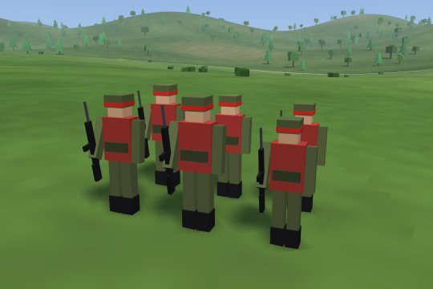
Soldat Gegenwart · 2005
Bataillon: 40 Mann · 1.400 Punkte/Goldje Einheit: 35
Moderner Infanterist mit Sturmgewehr, Splitterschutzweste und Funk.
Hohe Feuerrate auf große Distanz – jede antike Formation zerfällt unter diesem Feuer.
- Baut: Graben ausheben
- Fernkampf bis 400 m (38 Schaden je Treffer)
- Durchschlag 2 von 6 im Fernkampf, 0 von 6 im Nahkampf
- Rüstungsbrechung 88 %: so viel der gegnerischen Rüstung zählt nicht
- Schnell (4,2 m/s)
- Schießt auch auf kurze Entfernung mitten im Gefecht
- Schwach im Nahkampf – vor Reitern und Stoßtruppen schützen
- Reiterei, Plänkler und Artillerie – im Nahkampf ist die Truppe schwach

Scharfschütze Gegenwart · 2005
Bataillon: 12 Mann · 1.002 Punkte/Goldje Einheit: 83,5
Mit Zielfernrohr und Tarnanzug – ein einzelner Schuss auf 800 m und mehr.
Tödlich auf extreme Distanz, aber langsam feuernd und verwundbar, wenn entdeckt.
- Lauerer: in Wald und Gebüsch nur kurz beim Schießen sichtbar, danach wieder verborgen
- Fernkampf bis 800 m (170 Schaden je Treffer)
- Durchschuss: das Geschoss fliegt nach dem Treffer weiter (bis zu 5 weitere Ziele, je nach Gewicht und Panzerung)
- Durchschlag 3 von 6 im Fernkampf, 0 von 6 im Nahkampf
- Rüstungsbrechung 100 %: so viel der gegnerischen Rüstung zählt nicht
- Eiserne Moral – flieht spät und sammelt sich schnell
- Schießt auch auf kurze Entfernung mitten im Gefecht
- Schwach im Nahkampf – vor Reitern und Stoßtruppen schützen
- Teuer – Verluste schmerzen
- Reiterei, Plänkler und Artillerie – im Nahkampf ist die Truppe schwach

SEAL Team 6 (DEVGRU) Gegenwart · 2011
Bataillon: 12 Mann · 1.266 Punkte/Goldje Einheit: 105,5
Die Spezialeinheit der US Navy. Am 2. Mai 2011 stürmten ihre Operatoren in Abbottabad (Pakistan) das Anwesen, in dem sich Osama bin Laden versteckte (Operation Neptune Spear).
Kleine Elite: Nachtsicht, präzises Feuer, Nahkampf in Gebäuden. Sehr teuer.
- Lauerer: in Wald und Gebüsch nur kurz beim Schießen sichtbar, danach wieder verborgen
- Fernkampf bis 480 m (42 Schaden je Treffer)
- Durchschlag 2 von 6 im Fernkampf, 0 von 6 im Nahkampf
- Rüstungsbrechung 93 %: so viel der gegnerischen Rüstung zählt nicht
- Schnell (5,2 m/s)
- Eiserne Moral – flieht spät und sammelt sich schnell
- Schießt auch auf kurze Entfernung mitten im Gefecht
- Teuer – Verluste schmerzen
- Reiterei in die Flanke, Plänkler und Artillerie auf Distanz
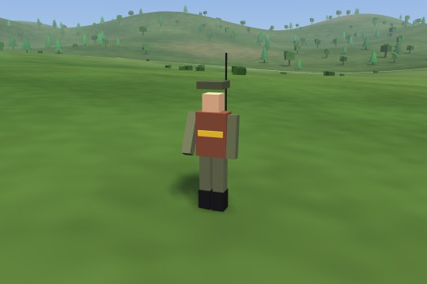
Patriot-General Gegenwart · 1991
Bataillon: 1 Mann · 1.250 Punkte/Goldje Einheit: 1.250
Ein Offizier mit Funkgerät, der einen einzigen Raketenschlag anfordert: Die Rakete stürzt aus großer Höhe auf ihr Ziel. (Frei erfunden: Das echte Patriot-System dient der Luftabwehr.)
Ein Mann, ein Schuss: gewaltige Explosion auf sehr große Entfernung. Feuert erst auf Angriffsbefehl – danach verlässt er das Schlachtfeld und kehrt nicht zurück.
- Fernkampf bis 2.500 m (900 Schaden je Treffer)
- Flächenwirkung: trifft alles im Umkreis von etwa 8 m
- Ein einziger Schuss, nur auf Angriffsbefehl – danach verlässt er das Schlachtfeld
- Durchschlag 6 von 6 im Fernkampf, 0 von 6 im Nahkampf – durchschlägt Panzerung
- Rüstungsbrechung 100 %: so viel der gegnerischen Rüstung zählt nicht
- Eiserne Moral – flieht spät und sammelt sich schnell
- Schwach im Nahkampf – vor Reitern und Stoßtruppen schützen
- Mindestreichweite 60 m – direkt davor trifft er nichts
- Wenig Munition (1 Schuss) – Lager oder Träger in der Nähe halten
- Teuer – Verluste schmerzen
- Reiterei, Plänkler und Artillerie – im Nahkampf ist die Truppe schwach
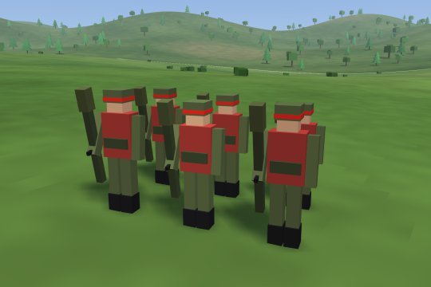
Panzerfaust-Schütze Gegenwart · 2000
Bataillon: 16 Mann · 1.056 Punkte/Goldje Einheit: 66
Panzerabwehr mit tragbarem Raketenwerfer – ein Mann gegen einen Kampfpanzer.
Die Antwort auf Panzer und Fahrzeuge. Gegen Infanterie verschwendet.
- Fernkampf bis 300 m (420 Schaden je Treffer)
- Flächenwirkung: trifft alles im Umkreis von etwa 2,6 m
- Durchschlag 5 von 6 im Fernkampf, 0 von 6 im Nahkampf – durchschlägt Panzerung
- Rüstungsbrechung 100 %: so viel der gegnerischen Rüstung zählt nicht
- Schwach im Nahkampf – vor Reitern und Stoßtruppen schützen
- Mindestreichweite 6 m – direkt davor trifft er nichts
- Wenig Munition (6 Schuss) – Lager oder Träger in der Nähe halten
- Teuer – Verluste schmerzen
- Reiterei, Plänkler und Artillerie – im Nahkampf ist die Truppe schwach

Panzerabwehrtrupp Gegenwart · 2010
Bataillon: 6 Mann · 792 Punkte/Goldje Einheit: 132
Zwei Mann mit einer Fire-and-forget-Lenkwaffe (etwa Javelin oder Spike), die Panzer von oben trifft.
Vernichtet Panzer auf große Distanz. Teuer und mit wenigen Schuss.
- Fernkampf bis 900 m (800 Schaden je Treffer)
- Flächenwirkung: trifft alles im Umkreis von etwa 2 m
- Durchschlag 6 von 6 im Fernkampf, 0 von 6 im Nahkampf – durchschlägt Panzerung
- Rüstungsbrechung 100 %: so viel der gegnerischen Rüstung zählt nicht
- Schwach im Nahkampf – vor Reitern und Stoßtruppen schützen
- Mindestreichweite 40 m – direkt davor trifft er nichts
- Wenig Munition (4 Schuss) – Lager oder Träger in der Nähe halten
- Langes Nachladen (9 s)
- Teuer – Verluste schmerzen
- Reiterei, Plänkler und Artillerie – im Nahkampf ist die Truppe schwach
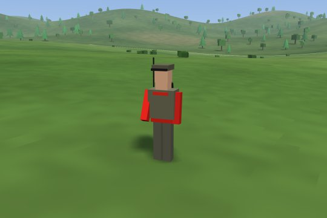
Kommandeur Gegenwart · 2003
Feldherr · 1.950 Punkte/GoldModerner Befehlshaber mit Lagebild in Echtzeit, Drohnen und Funk zu jeder Einheit.
Feldherr: erkennt jeden Angriff sofort, verlegt Reserven und lässt alle Schützen dasselbe Ziel bekämpfen.
- Feldherr „Lagebild in Echtzeit“: erkennt jeden Angriff, Feuer auf ein Ziel (Wirkung im Umkreis von 170 m)
- Fernkampf bis 150 m (45 Schaden je Treffer)
- Durchschlag 2 von 6 im Fernkampf, 0 von 6 im Nahkampf
- Rüstungsbrechung 88 %: so viel der gegnerischen Rüstung zählt nicht
- Schwer gerüstet (45 % Rüstung)
- Schnell (4,6 m/s)
- Schießt auch auf kurze Entfernung mitten im Gefecht
- Fällt der Feldherr, verliert das ganze Heer Moral
- Reiterei in die Flanke, Plänkler und Artillerie auf Distanz
Zukunft (4)

Lasersoldat Zukunft · 2100
Bataillon: 30 Mann · 1.320 Punkte/Goldje Einheit: 44
Infanterist der Zukunft in Energierüstung mit Lasergewehr.
Trifft fast immer und hat unbegrenzte Munition.
- Fernkampf bis 600 m (98 Schaden je Treffer)
- Durchschlag 4 von 6 im Fernkampf, 0 von 6 im Nahkampf – durchschlägt Panzerung
- Rüstungsbrechung 95 %: so viel der gegnerischen Rüstung zählt nicht
- Schwer gerüstet (45 % Rüstung)
- Sehr zäh: 180 Lebenspunkte
- Schnell (4,4 m/s)
- Eiserne Moral – flieht spät und sammelt sich schnell
- keine auffällige Schwäche
- Reiterei in die Flanke, Plänkler und Artillerie auf Distanz

Gauß-Scharfschütze Zukunft · 2120
Bataillon: 8 Mann · 476 Punkte/Goldje Einheit: 59,5
Schütze mit elektromagnetischem Präzisionsgewehr – das Geschoss ist am Ziel, bevor der Knall ankommt.
Ein Treffer, ein Ausfall – auf Entfernungen, auf denen der Gegner ihn nicht einmal sieht.
- Tarnfeld: überall verborgen – Feinde sehen die Truppe erst auf 15 m oder kurz nach einem Schuss
- Fernkampf bis 1.500 m (338 Schaden je Treffer)
- Durchschuss: das Geschoss fliegt nach dem Treffer weiter (bis zu 5 weitere Ziele, je nach Gewicht und Panzerung)
- Durchschlag 4 von 6 im Fernkampf, 0 von 6 im Nahkampf – durchschlägt Panzerung
- Rüstungsbrechung 100 %: so viel der gegnerischen Rüstung zählt nicht
- Sehr zäh: 165 Lebenspunkte
- Schnell (4,2 m/s)
- Schwach im Nahkampf – vor Reitern und Stoßtruppen schützen
- Teuer – Verluste schmerzen
- Reiterei, Plänkler und Artillerie – im Nahkampf ist die Truppe schwach
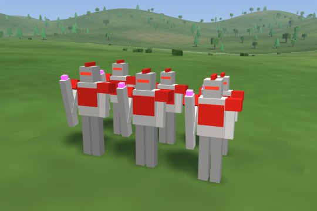
Plasmawerfer Zukunft · 2130
Bataillon: 16 Mann · 1.088 Punkte/Goldje Einheit: 68
Schwere Zukunftsinfanterie mit tragbarer Plasmakanone.
Plasmageschosse zerschmelzen Panzer und reißen Gruppen auseinander.
- Fernkampf bis 450 m (338 Schaden je Treffer)
- Flächenwirkung: trifft alles im Umkreis von etwa 2 m
- Durchschlag 5 von 6 im Fernkampf, 0 von 6 im Nahkampf – durchschlägt Panzerung
- Rüstungsbrechung 100 %: so viel der gegnerischen Rüstung zählt nicht
- Schwer gerüstet (50 % Rüstung)
- Sehr zäh: 225 Lebenspunkte
- Eiserne Moral – flieht spät und sammelt sich schnell
- Mindestreichweite 4 m – direkt davor trifft er nichts
- Teuer – Verluste schmerzen
- Reiterei in die Flanke, Plänkler und Artillerie auf Distanz

KI-Kommandeur Zukunft · 2150
Feldherr · 2.400 Punkte/GoldEine taktische KI in einem gepanzerten Exoskelett, vernetzt mit jeder Drohne und jedem Soldaten.
Feldherr: blitzschnelle Reaktionen, Feuerkonzentration und Verstärkung – die Truppen kämpfen präziser.
- Feldherr „Taktische KI“: präzise Truppen, sofortige Reaktion (Wirkung im Umkreis von 220 m)
- Fernkampf bis 170 m (60 Schaden je Treffer)
- Durchschlag 2 von 6 im Fernkampf, 0 von 6 im Nahkampf
- Rüstungsbrechung 80 %: so viel der gegnerischen Rüstung zählt nicht
- Schwer gerüstet (70 % Rüstung)
- Schnell (4,6 m/s)
- Schießt auch auf kurze Entfernung mitten im Gefecht
- Fällt der Feldherr, verliert das ganze Heer Moral
- Reiterei in die Flanke, Plänkler und Artillerie auf Distanz